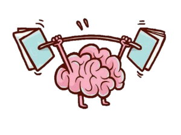
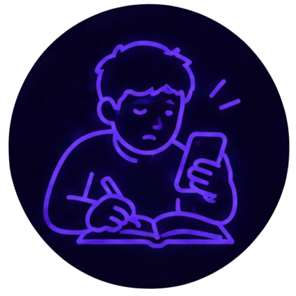
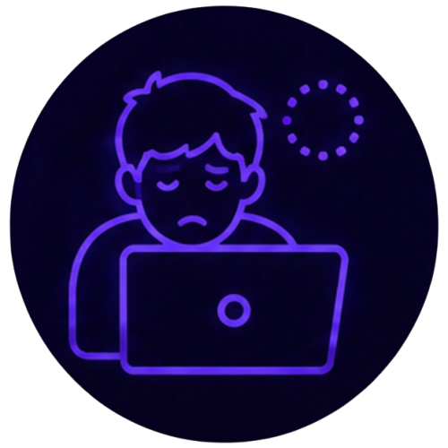
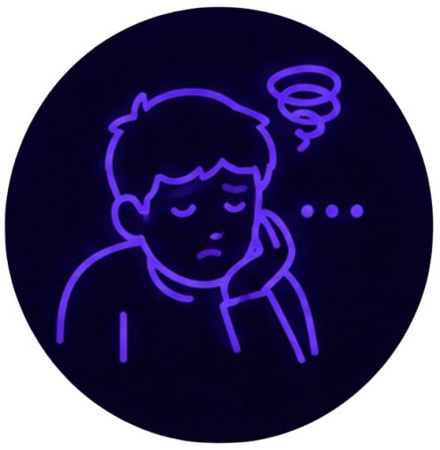
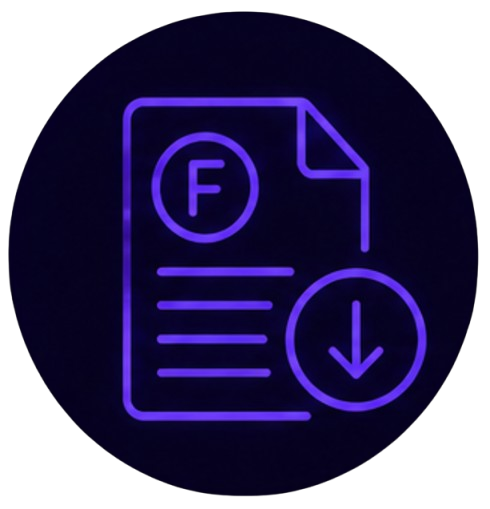

Pérdida de enfoque
Cada vez que una notificación interrumpe lo que estás haciendo, tu cerebro necesita tiempo para volver a concentrarse por completo. Con el tiempo, estas interrupciones constantes entrenan a la mente a distraerse con más facilidad, afectando el estudio, el trabajo y hasta las conversaciones cara a cara.

Tip del día
Prueba la técnica Pomodoro. Estudia o trabaja 25 minutos sin ninguna distracción (celular en otra habitación o en modo avión), luego toma un descanso de 5 minutos. Repite el ciclo las veces que necesites.

Revisar el celular al estudiar
Sin darte cuenta, tomas el celular varias veces mientras haces tarea.
Dale la vueltaQué hacer
Deja el celular fuera de tu vista mientras estudias, no solo en silencio. Tenerlo cerca, aunque no lo uses, ya distrae parte de tu atención.

Dificultad para terminar tareas
Saltas constantemente de una cosa a otra sin completar ninguna.
Dale la vueltaQué hacer
Divide tus tareas en bloques pequeños con un objetivo claro para cada uno, en vez de intentar hacer todo al mismo tiempo.

Aburrimiento constante
Sientes la necesidad de tener el celular contigo incluso en momentos cortos de espera.
Dale la vueltaQué hacer
Practica estar en momentos de espera sin el celular a propósito. Al principio se siente incómodo, pero es una forma de entrenar la concentración.

Bajo rendimiento académico
Notas que te toma más tiempo del normal terminar tareas o entender lo que estudias.
Dale la vueltaQué hacer
Usa apps de bloqueo temporal de notificaciones durante tus horas de estudio, o simplemente activa el modo avión mientras trabajas.